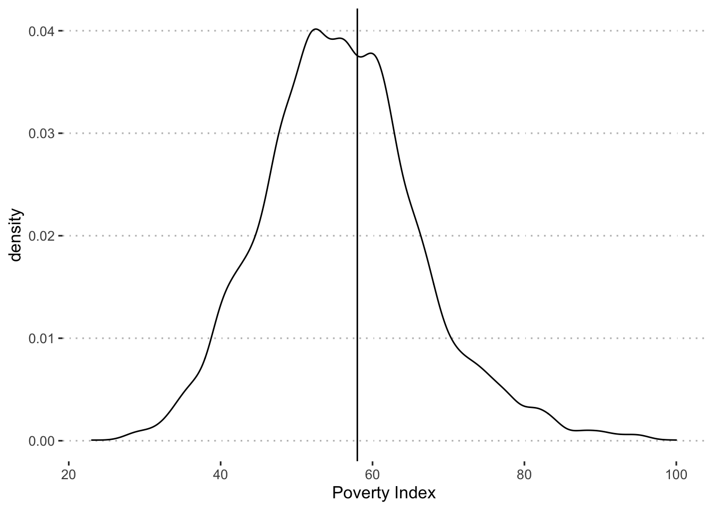
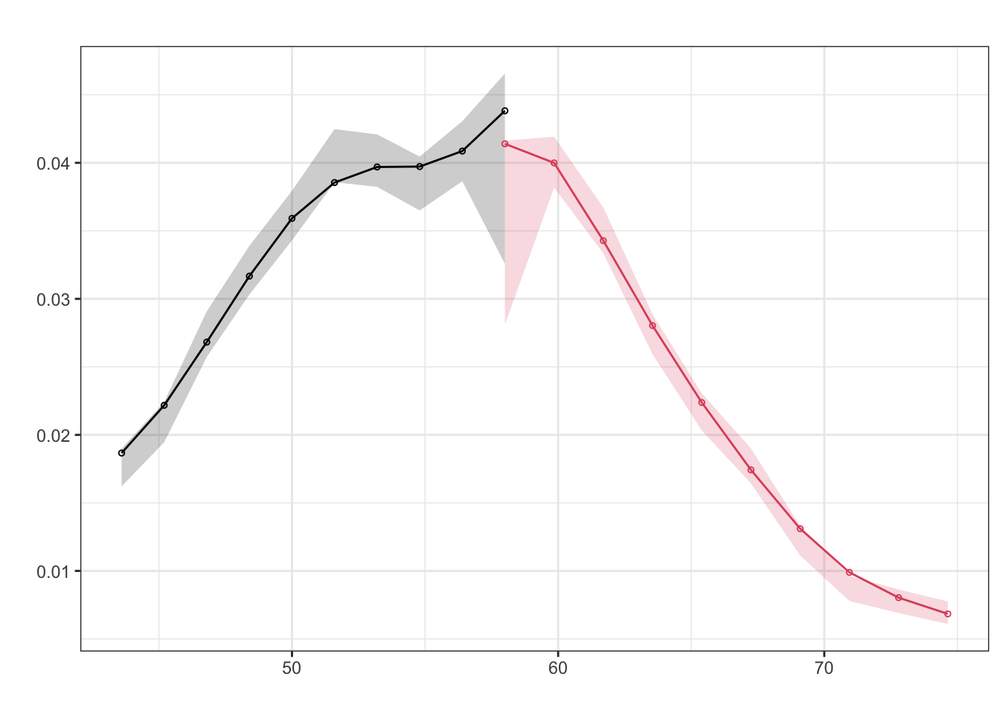
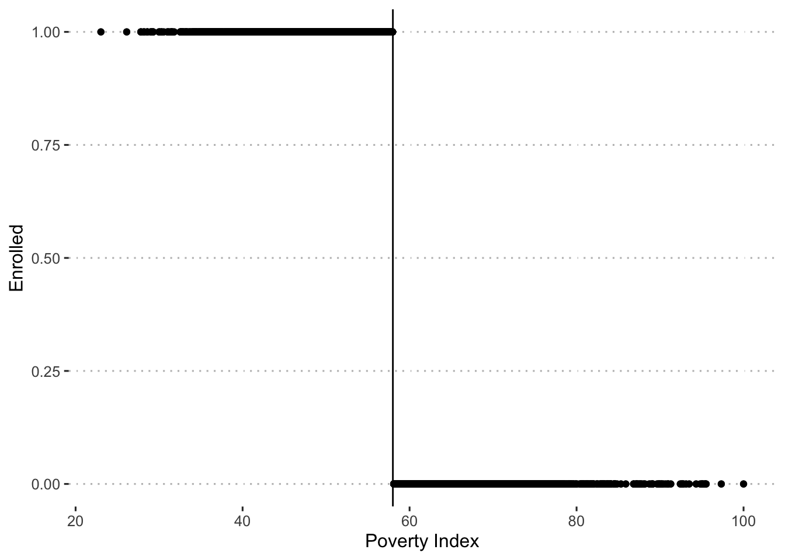
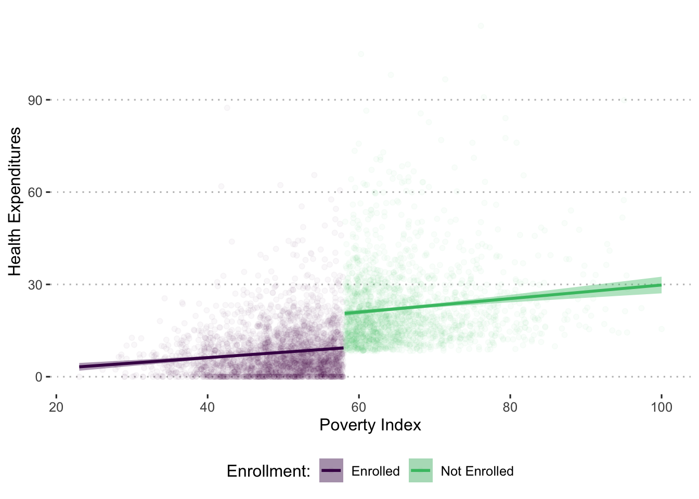

Chapter 5 Regression Discontinuity Designs
Now consider how the regression discontinuity design (RDD) method can be applied to our Health Insurance Subsidy Program (HISP). After doing some more investigation into the design of HISP, you find that in addition to randomly selecting treatment villages, the authorities targeted the program to low-income households using the national poverty line. The poverty line is based on a poverty index that assigns each household in the country a score between 20 and 100 based on its assets, housing conditions, and sociodemographic structure. The poverty line has been officially set at 58. This means that all households with a score of 58 or below are classified as poor, and all households with a score of more than 58 are considered to be non-poor. Even in the treatment villages, only poor households are eligible to enroll in HISP. Your data set includes information on both poor and non-poor households in the treatment villages.
# Create data subset with only treatment localities
df_treat <- df %>%
filter(treatment_locality == 1)Before carrying out the regression discontinuity design estimations, you decide to check whether there is any evidence of manipulation of the eligibility index. As a first step, you check whether the density of the eligibility index raises any concerns about manipulation of the index. You plot the percentage of households against the baseline poverty index.
ggplot(df_treat, aes(x = poverty_index)) +
geom_vline(xintercept = 58) +
geom_density() +
labs(x = "Poverty Index")
We can also conduct a McCrary density test, to examine this more formally.
test_density <- rdplotdensity(rdd = rddensity(df_treat$poverty_index, c = 58),
X = df_treat$poverty_index,
type = "both")
The figures do not indicate any “bunching” of households right below the cutoff of 58.
Next, you check whether households respected their assignment to the treatment and comparison groups on the basis of their eligibility score. You plot participation in the program against the baseline poverty index and find that two years after the start of the pilot, only households with a score of 58 or below (that is, to the left of the poverty line) have been allowed to enroll in HISP. In addition, all of the eligible households enrolled in HISP. In other words, you find full compliance and have a “sharp” RDD.
ggplot(df_treat, aes(y = enrolled, x = poverty_index)) +
geom_vline(xintercept = 58) +
geom_point() +
labs(x = "Poverty Index", y = "Enrolled")
You now proceed to apply the RDD method to compute the impact of the program. Using follow-up data, you again plot the relationship between the scores on the poverty index and predicted health expenditures and find the relation illustrated in figure X. In the relationship between the poverty index and the predicted health expenditures, you find a clear break, or discontinuity, at the poverty line (58).
df_treat %>%
filter(round == 1) %>%
mutate(enrolled_lab = ifelse(enrolled == 1, "Enrolled", "Not Enrolled")) %>%
ggplot(aes(x = poverty_index, y = health_expenditures,
group = enrolled_lab, colour = enrolled_lab, fill = enrolled_lab)) +
geom_point(alpha = 0.03) +
geom_smooth(method = "lm") +
labs(x = "Poverty Index", y = "Health Expenditures") +
scale_colour_viridis_d("Enrollment:", end = 0.7) +
scale_fill_viridis_d("Enrollment:", end = 0.7) +
theme(legend.position="bottom")
The discontinuity reflects a decrease in health expenditures for those households eligible to receive the program. Given that households on both sides of the cutoff score of 58 are very similar, the plausible explanation for the different level of health expenditures is that one group of households was eligible to enroll in the program and the other was not. You estimate this difference through a regression with the findings shown in the following table.
df_treat <- df_treat %>%
mutate(poverty_index_c0 = poverty_index - 58)
out_rdd <- lm_robust(health_expenditures ~ poverty_index_c0 * enrolled +
age_hh + age_sp + educ_hh + educ_sp +
female_hh + indigenous + hhsize + dirtfloor +
bathroom + land + hospital_distance,
data = df_treat %>% filter(round == 1))htmlreg(out_rdd, doctype = FALSE,
custom.coef.map = list('enrolled' = "Enrollment"),
caption = "Evaluating HISP: Regression Discontinuity Design with Regression Analysis",
caption.above = TRUE)| Model 1 | |
|---|---|
| Enrollment | -9.03* |
| [-9.90; -8.16] | |
| R2 | 0.46 |
| Adj. R2 | 0.46 |
| Num. obs. | 4960 |
| RMSE | 9.14 |
| * 0 outside the confidence interval. | |
Note: We could also estimate the effect of the program in the following ways
Estimating the effect of the program on health expenditures again using regression, but include an interaction with a cubic polynomial of the running variable.
out_rdd_cubic <- lm_robust(health_expenditures ~ enrolled * poverty_index_c0 +
enrolled * I(poverty_index_c0^2) +
enrolled * I(poverty_index_c0^3) +
age_hh + age_sp + educ_hh + educ_sp +
female_hh + indigenous + hhsize + dirtfloor +
bathroom + land + hospital_distance,
data = df_treat %>% filter(round == 1))Estimating the effect of the program on health expenditures again using regression, but only including observations 5 points above or below the cutoff of 58.
out_rdd5 <- lm_robust(health_expenditures ~ enrolled * poverty_index_c0 +
age_hh + age_sp + educ_hh + educ_sp +
female_hh + indigenous + hhsize + dirtfloor +
bathroom + land + hospital_distance,
data = df_treat %>% filter(round == 1 &
abs(poverty_index_c0) <=5))Combining all these results together we see a consistent effect of the program.
htmlreg(list(out_rdd, out_rdd_cubic, out_rdd5),
doctype = FALSE,
custom.model.names = c("Linear", "Cubic", "5 Point Window"),
custom.coef.map = list('enrolled' = "Enrollment"),
caption = "Evaluating HISP: Regression Discontinuity Design with Regression Analysis",
caption.above = TRUE)| Linear | Cubic | 5 Point Window | |
|---|---|---|---|
| Enrollment | -9.03* | -8.94* | -8.54* |
| [-9.90; -8.16] | [-10.42; -7.46] | [-10.23; -6.86] | |
| R2 | 0.46 | 0.46 | 0.41 |
| Adj. R2 | 0.46 | 0.46 | 0.40 |
| Num. obs. | 4960 | 4960 | 1879 |
| RMSE | 9.14 | 9.14 | 9.26 |
| * Null hypothesis value outside the confidence interval. | |||
Is the result of the RDD analysis valid for all eligible households?
No, the RDD estimates represent the effects for households very close to the cutoff poverty index score. Intuitively, this is the region where eligible and ineligible households have most similar characteristics and as such can be compared.
Compared with the impact estimated with the randomized assignment method, what does this result say about those households with a poverty index of just under 58?
This result says that households just under the poverty line have a slightly smaller reduction in health expenditures than the average eligible household (about $1 less). Households with a poverty index just under 58 will spend on average $9.03 less on health as a result of the HISP. This is less than the result in randomized assignment, which was an average decrease in health expenditures of $10.
Based on the RDD impact estimates, should the HISP be scaled up nationally?
No, based on this result, the HISP should not be scaled up nationally because it decreased health expenditures by less than the $10 threshold level.